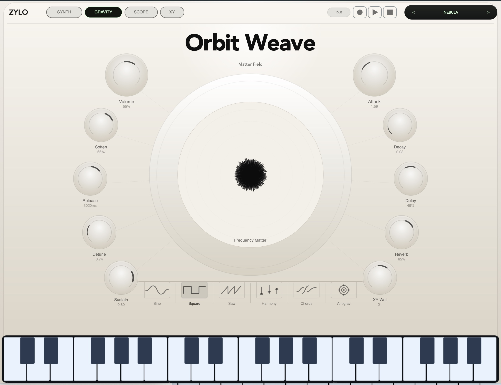
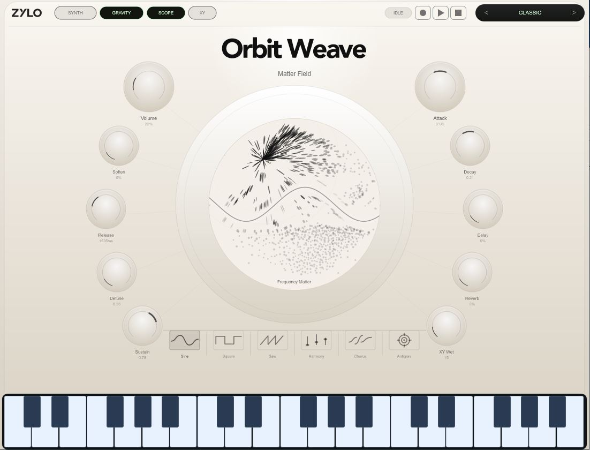
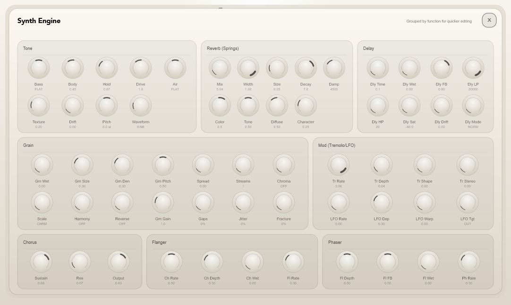
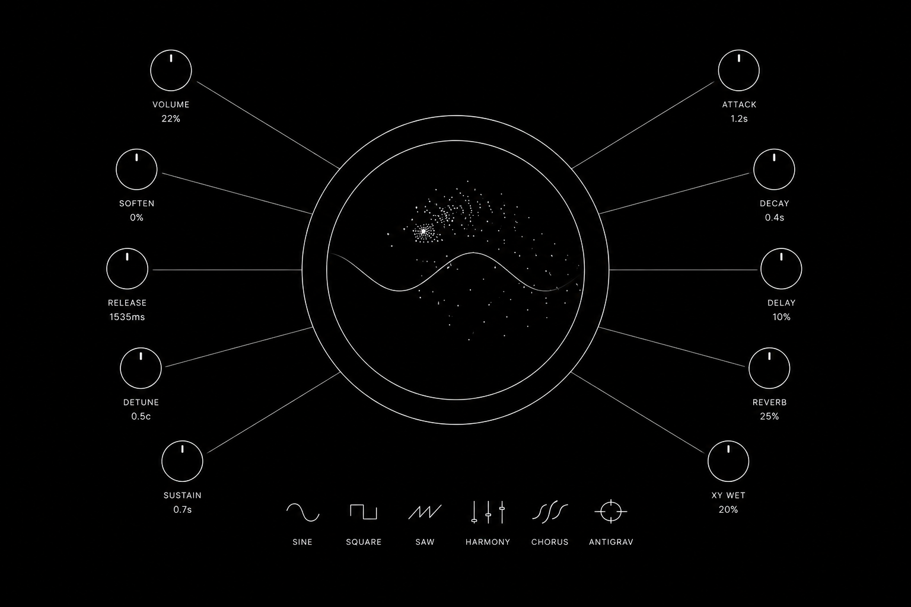

Modulation with a body.
The central XY field visualizes frequency matter as it gathers, disperses, or whips into orbit. It makes modulation feel alive instead of hidden behind a matrix.
About
Orbit Weave is a performance synthesizer built around a moving matter field. Instead of treating modulation like a list of assignments, it turns sound into something you can see, push, pull, and disturb in real time.
Available as standalone app, VST3, AU · Windows & Mac · 64-bit only

Core Instrument
The central XY field visualizes frequency matter as it gathers, disperses, or whips into orbit. It makes modulation feel alive instead of hidden behind a matrix.
Gravity, antigravity, and XY performance controls turn motion into a playable part of the patch, from slow swells to chaotic directional energy.
Tone, envelopes, waveform, bass, body, texture, drift, pitch, drive, filter, and output controls are grouped for quick patch building.
Grain size, density, pitch, spread, streams, reverse, jitter, fracture, and gain controls let echoes smear into animated clouds.
Orbiting XY Field
Orbit Weave’s signature surface is the Matter Field: a circular XY performance area where visual motion and synth movement happen together. Use the top controls to switch between Synth, Gravity, Scope, and XY views, then shape the field with the surrounding knobs.

Synth Engine
The synth engine gives Orbit Weave a serious foundation: tone shaping, envelopes, reverb, delay, grain, tremolo, LFO, chorus, flanger, and phaser all sit in grouped panels so you can move quickly without losing depth.


Performance Layout
Volume, filter, soften, release, detune, sustain, attack, decay, delay, reverb, focus, and XY wet surround the field like a playable control ring. Waveform and character buttons sit close to the keyboard for quick timbral shifts.
Feature List
Unique circular XY Matter Field for animated, visual performance modulation
Gravity, antigravity, scope, and XY modes for controlling and viewing motion
Robust synth engine with tone, waveform, envelope, filter, drift, texture, pitch, and output shaping
Granular delay engine with grain size, density, pitch, spread, streams, reverse, jitter, fracture, and gain
Integrated reverb, delay, chorus, flanger, phaser, tremolo, and LFO effects
Preset workflow, visual scope, transport controls, and built-in keyboard for fast patch exploration
Audio Samples
Matter Field
Slow circular motion with filter drift and wide orbit modulation.
Granular Delay
Scattered grains, pitch movement, and soft feedback trails.
Antigrav Pulse
Bouncing modulation energy with plucked synth motion.
System Requirements